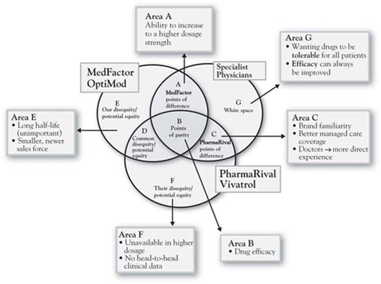
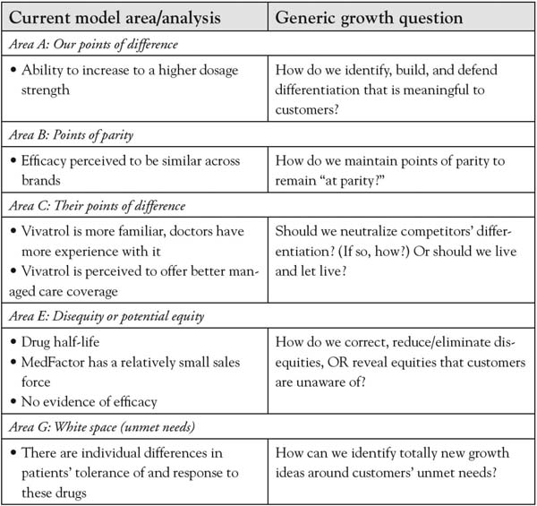
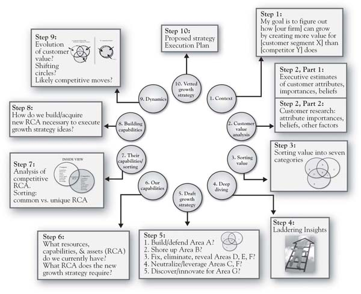

This book is based on a fairly simple premise, one that is not new: the firm that develops a better understanding of the value that customers seek has a competitive advantage. What is new, however, is the realistic look at just how difficult it is to develop that understanding. It is a long shot from simply “giving customers what they want.” It instead means developing an understanding of the deep drivers of customer value sought, shoring up our value proposition in the short term, but then building a longer-term, unique position that speaks to those customer values. We find, over and over again, that there are gaps between what managers currently believe customers value and believe and actual customer assessments. There is growth opportunity in closing these gaps, and the 3-Circle strategy process is precisely designed to uncover and leverage that opportunity.
In this chapter, we summarize the work by presenting the 10-step process in which a growth strategy project is defined and executed (see Figure 9.1 "Ten Steps in a 3-Circle Growth Strategy Project"). There are really three big elements underlying these 10 steps. First is for the management team to formally lay out the scope of the project and then their hypotheses about customer value (Steps 1 and 2a). Second is to gather data directly from target customers and to analyze it by breaking it down into the categories defined in the model and deeper analysis via laddering (Steps 2b, 3, and 4). Third is to develop particular growth strategy ideas and test them out via (a) assessment of capabilities required and alignment, and (b) evaluating the competitive dynamics of the marketplace. By Step 10, we have developed a growth strategy that has been developed upon the sound foundation of customer value analysis and screened by a deep analysis of capabilities, resources, and assets. To illustrate this process, we will use the case study of a major global pharmaceuticals firm.
Figure 9.1 Ten Steps in a 3-Circle Growth Strategy Project

In fact, Chapter 4 "The Meaning of Value" has covered Step 1 in fair detail. It is essential that we have a clear sense of the parameters of the project, in the form of the now familiar context statement:
“My goal is to grow COMPANY UNIT by creating more value for CUSTOMER SEGMENT than COMPETITOR does.”
Annie Lambert is a brand manager at MedFactor,The branding and category information is disguised for confidentiality, but the example is built around an actual application of the 3-Circle model. an $8-billion worldwide manufacturer of pharmaceuticals, who led a 3-Circle project for her company. The goal for the context statement was “to grow sales and profit of MedFactor’s OptiMod drug by creating more value for specialist doctors than PharmaRival does with its drug Vivatrol.”
Recall from Chapter 4 "The Meaning of Value" that the underlying factor behind a successful competitive strategy is superior understanding of what drives the value being sought by customers. We can wander back through the chapters and see this in many examples: DuPont’s success with Teflon came only after its management team understood the important values behind consumers value placed on time savings (as opposed to healthy eating); Ultimate Ears’ phenomenal success was due to the enormous value placed by musicians on superior performance and safety, values less known before in-ear monitors were invented simply because on-stage monitors were taken as a “given”; Accor was successful with the spartan Formule 1 hotel design because they understood that a large segment of customers simply sought rest and safety in a clean, quiet place to sleep; providing for this specific experience at a bargain price made Formule 1 very successful.
Yet we need a systematic way to think about value. Step 2 involves uncovering the dimensions of value—first to understand executives’ best guesses as to customer value (Step 2a) and then to obtain customers’ actual perceived value (Step 2b). Recall from Chapter 4 "The Meaning of Value" that value can be broken down in a simple way:
This equation simply implies that a customer’s assessment of the overall value of brand j can be broken down to be a function of what the customer believes about brand j on each of up to n attributes, each weighted by their importance. There is a long line of research in psychology and marketing that uses this formulation to determine overall brand assessments by taking individual consumer beliefs about the brand—for example, Bij—the consumer’s belief about brand j on attribute i—each weighted by Ii, the importance of attribute i to the consumer. This, again, is a straightforward way to think about overall value—there are some critical pieces of information that come out of this model that help us dig more deeply into customer value:
It turns out that this is enough information to make some significant strides in understanding customer value and growth opportunities.
In the case of our pharmaceuticals example, assume that Annie and her executive team initially identified the following six key attributes and benefits as key reasons why doctors in this category would choose one brand over another (again, this was before speaking to the doctors):
The executive team made their estimates of customer value before any doctors were interviewed. This exercise required the executives to estimate both how important they believe the previous attributes are to the doctors and how the doctors are likely to rate both their brand OptiMod and the competitive brand Vivatrol on each attribute. Subsequently, Annie interviewed a sample of specialist doctors, asking them to provide ratings in a format similar to those provided by the MedFactor team. In addition, open-ended questions were asked about other attributes or benefits the doctors believe influence their prescription decisions and the important values behind the key reasons. These questions proved insightful, as they revealed two other attributes that were important to doctors in evaluating competitive drugs: the availability of clinical evidence and sales-force experience.
Step 3 involves the actual sorting of value into the seven categories defined by the 3-Circle model. As we have emphasized throughout the book, each of these categories has implications for growth strategies. Together, they summarize most of the core concepts of current work on growth strategy. For MedFactor’s drug OptiMod, Annie’s analysis based on interviews with several specialist physicians revealed a number of important insights (see Figure 9.2 "Three-Circle Analysis for MedFactor’s New Drug" for a summary). The analysis illustrates a classic case of a new brand facing an entrenched existing brand with whom physicians are quite familiar. Annie’s drug OptiMod gets unique credit from physicians only for its flexibility in dosage levels (Area A). In contrast, the competitor’s Vivatrol is a very familiar drug with which physicians have a great deal of experience. It is also perceived by physicians to have an advantage on the managed-care side, meaning that they believe the patient will pay less and be better served by insurance coverage for Vivatrol compared to OptiMod.
Figure 9.2 Three-Circle Analysis for MedFactor’s New Drug
The Figure 9.2 "Three-Circle Analysis for MedFactor’s New Drug" analysis captures physician perceptions as Annie identified them in the interviews. However, two critical points came as a complete surprise:
These two insights were quite significant but there was more. In addition to the earlier findings of important customer attributes that the executive team had not included in their original list, the physicians volunteered that two other factors were influential in their assessments of the two companies and their drugs: laboratory evidence and sales-force experience.
Figure 9.3 3-Circle Model Areas and Generic Growth Questions
Throughout the book, we have alluded to the importance of understanding customer value from a deeper perspective. In sum, behind the customer attributes we have identified are the deeper reasons or values we discussed in Chapter 4 "The Meaning of Value". In Annie’s case, she wanted to focus on what she found to be the most important attribute to doctors—efficacy. Efficacy is shorthand for effectiveness—to what extent does the drug produce the desired remedy? Figure 9.4 "Ladder for Doctors on the Attribute Efficacy" presents the ladder that summarizes Annie’s conversations with doctors regarding the reasons why efficacy is an important driver of decisions. This insight is straightforward: doctors do not seek to prescribe a particular drug simply because it is more efficacious—the efficacy is important because it reinforces the doctor’s sense of fulfillment in helping improve patients’ quality of life. While in hindsight this seems obvious, in fact it is not obvious at all if you do not ask the questions. The product’s positioning and communications can be much more powerful if it is connected to the customer’s deeper values (i.e., there will be a greater sense of patient care and personal satisfaction for this objectively better drug). Further, understanding the doctor’s goal at a deeper level gets us thinking about how to both communicate and, in thinking through broader solutions, support his or her efforts—for example, by developing new ways to ensure that patients take required dosages.
Figure 9.4 Ladder for Doctors on the Attribute Efficacy

The categories of value identified in Step 3 (sorting) and additional insights from the research generate some natural, action-oriented questions for pursuing growth of customer value and competitive position. In Chapter 6 "Growth Strategy", we discussed a series of growth questions that naturally emerge from the different categories of the framework. For Annie’s case, the questions led to a number of preliminary growth ideas, which are presented in the text boxes surrounding the 3-Circle diagram in Figure 9.5 "Growth Strategy Priorities for OptiMod". The figure exhibits the value that Annie discovered in her interviews in Column A and the basic growth questions for each category of value in Column B. Column C indicates the conclusions initially drawn by this analysis. Chief among these conclusions was to correct doctor’s misperceptions regarding OptiMod’s efficacy and managed-care coverage. We will come to the final conclusions regarding growth strategy in Step 10.
Refer back to Figure 9.1 "Ten Steps in a 3-Circle Growth Strategy Project" for a moment. Once growth ideas are initially generated in Step 5, then the important questions revolve around (a) whether or not we can substantively deliver upon those unique ideas, or (b) whether we might want to cut costs by reducing those capabilities or assets that are not contributing effectively to customer value. So Step 6 begins the process of grounding growth strategy in our existing and potential future capabilities. The questions here are what capabilities do we actually have? Are those capabilities aligned with our Area A? Do we have the substantive capabilities to defend and build our Area A? What capabilities do we need to pursue each of the growth ideas we discovered in Step 5? Step 7 then takes the necessary step of turning the microscope to competitors’ organizations in order to provide an honest look at ourselves. Do we really have capabilities, resources, or assets that are in any way truly different from those of competitors?
Figure 9.6 "The Inside View—A Brief Version of Steps 6 and 7: Overlapping Capabilities, Resources, and Assets" provides a partial analysis of what we label the inside view for Annie and her firm MedFactor versus PharmaRival. As noted in Chapter 8 "Dynamic Aspects of Markets", the two circles reflecting the inside view capture skills and assets inside the firm. The easiest way to identify the relationship between the inside view (two circles capturing capabilities) and the outside view (three circles capturing customers’ perception of needs and the ability of each player to meet those needs) is to think of cause and effect. The inside view causes the outside view. In other words, the customer benefits that we find in the customer’s assessment (the outside view) are actually produced by the capabilities, resources, and assets that we enumerate in the inside view. So the firm maximizes its competitive advantage and financial outcomes when it develops skills and resources that both (a) generate unique benefits for customers and (b) cannot be easily matched by competitors. The problem with the standard literature on the resource-based view of the firm is that it provides no mechanism by which resources and capabilities are connected to unique customer value.For the exception to this, see Burke (2006). In the analysis here, the mechanism is a careful set of questions that ask the analyst to evaluate both the existing points of difference and the potential growth ideas against the capabilities that should be in place to make them happen. Annie’s analysis for MedFactor in Figure 9.6 "The Inside View—A Brief Version of Steps 6 and 7: Overlapping Capabilities, Resources, and Assets" suggests that the firm appears to have a unique capability advantage in product development and potentially a unique capability disadvantage in the sales force (both size and organization or discipline). The analysis suggests that MedFactor’s Area A with OptiMod (higher dosage potential) is unique to the product and, along with an actual advantage in efficacy, is likely attributable to a better new product development capability. The jury is still out on whether or not these product advantages are sustainable. In this case, however, it was clear that some growth issues could be addressed specifically through more effective communications and building the sales force’s skills and tool kit around the specific hot-button issues in the value proposition—specifically, OptiMod’s currently underappreciated efficacy advantage and the misperception about the managed-care disadvantage.
Figure 9.5 Growth Strategy Priorities for OptiMod

Step 9 involves an analysis of market dynamics depicted in the three circles. This step recognizes that markets are constantly moving, and in potentially predictable ways. Recall from Chapter 8 "Dynamic Aspects of Markets" that changes in the market can be reflected one of two ways in the model. First, the circles move, often approaching one another as the offerings of the different competitors become more similar and customer needs become more well known as a product or service category matures. Second, though, is the flow of value through the circles, which helps illustrate the typical competitive innovation-imitation cycle of healthy markets. In the case of MedFactor and its drug OptiMod, the market dynamics analysis would suggest that once the firm is able to establish its unique Area A with doctors, there is a very real possibility that its advantages can be eroded over time as its competitors seek to imitate its unique advantages. A careful exploration of the forces that evolve the market toward commoditization is imperative, as patent protection is limited and other firms are likely to be aggressive in their imitation of a demonstrated competitive advantage.
Figure 9.6 The Inside View—A Brief Version of Steps 6 and 7: Overlapping Capabilities, Resources, and Assets

Ultimately, the ideas behind growth strategy evolve and improve through the iterative evaluation in Steps 6 through 9 of the 10-step process. The first screen is customer value. The second screen includes capabilities, resources, and assets. The third screen addresses market dynamics. In the end, the goal is to develop growth strategy that will hit the most important customer values in the most efficient way. The OptiMod team developed and executed their growth strategy for the brand in three specific ways. The following is paraphrased from Annie’s report:
Reposition “EFFICACY” from Area B to Area A. A notable theme throughout this analysis is that there are key benefits to be leveraged for OptiMod of which the customer is not fully aware. From the outside view, efficacy is a point of parity between the two products (Area B) but it actually is an attribute that could be leveraged for OptiMod (Area A) because of the favorable head-to-head study results.
Optimize Area A. Dosing is an important attribute to specialist doctors in this category and is a point of difference for OptiMod. Communicate the dosing feature as a point of difference between Vivatrol and OptiMod when a rheumatologist views efficacy as being the same. Create shelf talkers to communicate the key dosing messages for OptiMod at the point of selection. Enhance prominence of dosing message on sales material.
Moving from Area C to B. Doctors are under the misconception that Vivatrol has managed care advantages over OptiMod. Sales force should educate doctors on managed care position of OptiMod in local areas. Create geography-specific shelf talkers that highlight formulary coverage of OptiMod vs. competition.
In addition, doctors are more familiar with PharmaRival than MedFactor. Develop awareness campaign & corporate branding initiatives that highlight MedFactor’s current commitment to rheumatology and future pipeline. Ensure key opinion leaders in the field are aware of points of difference about MedFactor as opposed to product differentiation only. Continue to partner with professional associations to improve the awareness of the MedFactor name.More information cannot be provided without divulging proprietary information.
MedFactor put five different corporate branding initiatives into place in order to improve awareness of the company name with customers. In addition, the company has also addressed the problem of its managed care positioning. MedFactor put two new sales tools in place that feature local formulary grids. This enabled its sales representatives to review the information with customers—and show them how it is relevant to their local business.
The actions undertaken by the MedFactor team were very successful. The new branding initiatives contributed to a 20% growth in prescription volume for OptiMod in fiscal year 2009. Fueled by truly superior product value and communications that effectively demonstrated that value, the brand took over the market leadership position in its category during that year. The key competitive strategy concerns that Annie and her team identified on the basis of interviewing physicians in the key target market tended to focus on education. They found fairly clear consistency around the need for evidence in demonstrating one’s advantages and the company’s failure to effectively share that evidence. In general, there is lower risk in making big decisions regarding education even on the basis of small sample evidence as, very frequently, more education is better, provided that (a) it is focused on the right customer values, and (b) the company really, truly effectively delivers on those customer values.
Beating the competitor, creating value for customers, and building capabilities may be seen as goals or principles that are often at odds with one another. So most firms tend to focus on one or two of those goals. The search for growth is further complicated by the fact that knowledge of customer needs can get quickly out of date even though we feel confident in our existing knowledge. The imperative here is first to narrow the focus to the three core principles, to focus on understanding customer value as primary, but then to also think of those principles as an integrated whole. The 3-Circle model provides an integrated view of these three principles and allows a team to quickly understand the current nature of competitive advantage in their markets. The 10-step process for 3-Circle growth strategy development is summarized in Figure 9.7 "The 10-Step Process with Summary Points" with an additional brief description of each step.
One of us recently gave a talk to Notre Dame alumni in San Francisco. At the reception following the seminar, a conversation with new, incoming MBA students in attendance was joined by Ryan Else, an entrepreneur who had recently graduated from the Notre Dame executive MBA (EMBA) program. Ryan told the tale of his most recent company, Corte, LLC, a manufacturer and marketer of environmentally friendly chemical products. The company had developed a product called Corte-Clean, which is a nontoxic, chlorine-free agent for cleaning composite decking material commonly used for backyard decks. Ryan had developed the competitive positioning strategy for Corte-Clean in a 3-Circle growth strategy project in his EMBA marketing core course. With composite decking increasing from 2% to 20% of all decks, yet with the cleaning-solution category dominated by existing players, the company needed a solid positioning strategy to leverage that growth. The 3-Circle analysis revealed that Corte-Clean could be most powerfully positioned against competitors PSC, Behr and Olympic, with a focus on the absence of harsh chemicals (eco-friendliness) as the core of Area A, supported by ease of use and shelf life. It turns out these values all mattered a great deal to customers. Taking an even deeper look at customer buying behavior, though, Ryan’s analysis revealed that the company’s Internet site could become an important sales tool after discovering the importance that customers place on subscription sales plan and worry-free regular ordering called AutoShip. These were key insights on which Corte LLC developed strategy for penetrating key retail partners. The company went from about 100 stores in 2007 to over 3,800 stores in 2010. Sales of Corte-Clean more than doubled between 2007 and 2009, and sales in the first 4 months of 2010 have exceeded all of 2009 by 44%. The product is now distributed domestically through Lowe’s, ACE Hardware, True Value, and 84 Lumber, and has stretched, through its website and through international distribution, to Germany, France, Spain, England, Australia, the UAE, and Scandinavia.
Figure 9.7 The 10-Step Process with Summary Points
While Ryan generously attributes the success of his new venture to his 3-Circle project, in fact, the 3-Circle model cannot take credit. That success was a function of the Corte team’s determined market insight, development of an innovative product that delivered on important customer values, a solid website, and dogged persistence in getting distribution. However, the case study does illustrate effective application of the principles that lay a foundation for effective competitive strategy with which we began this book:
In sum, Ryan’s company has now crafted a unique competitive position in its market, and that position is built upon the firm foundation of a truly, substantively different product that customers (and, subsequently, retailers) highly value. The primary credit that the 3-Circle model can claim is in helping to keep all eyes focused on the value sought by customers, the desired competitive position, and building the capabilities that allow the team to deliver on that position honestly. As with many of the case study successes we have explored in which the 3-Circle model has been applied, in the end, Ryan’s product matters more to customers than do competitive products. That is something worth growing.